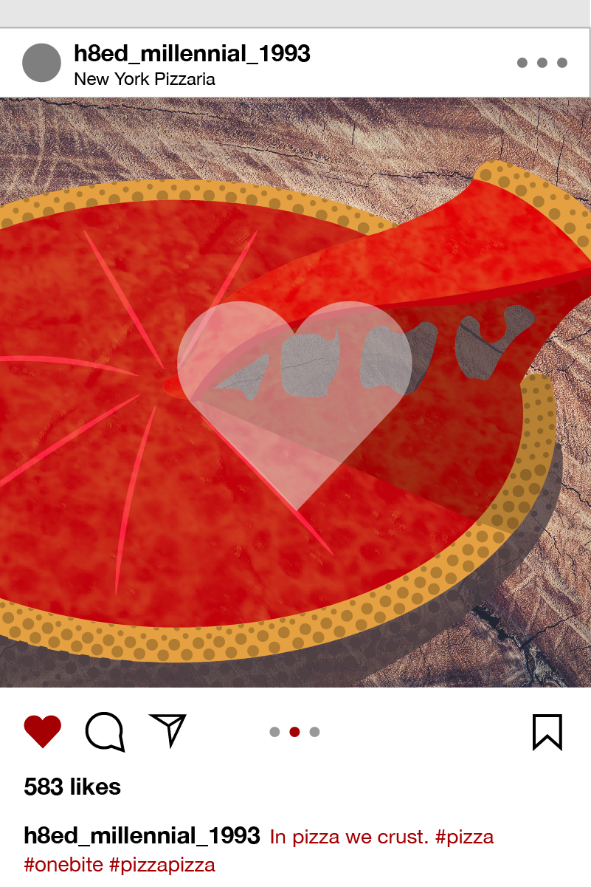
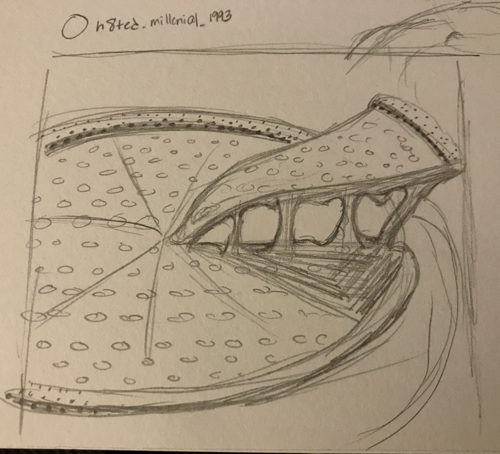
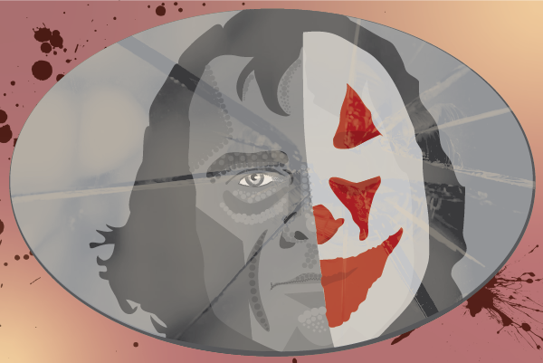
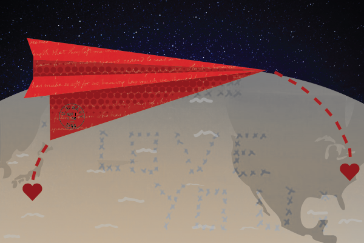
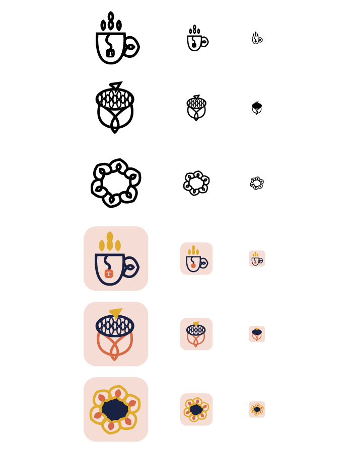
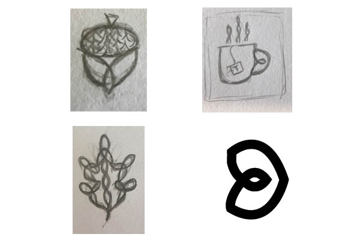
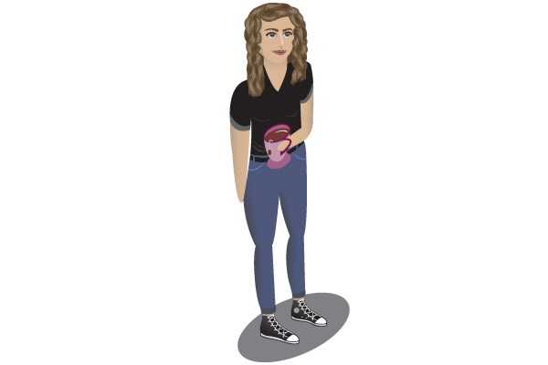

December 6, 2019
Project 4: Timeline

Our final project was a timeline info graphic. I chose to focus my attentions on one of my favorite brands, Marvel Comics. After doing a lot of research about the company and its origins, I collected enough information to form this particular info graphic. I drew inspiration from Steve Ditko’s illustration style and the classic shapes of word and thought bubbles. I used an Adobe font called Classic Comic for the main text with comic titles in bold italic, names in bold, and plain text in italic. The numbers are all set in Impact but vary in size based on importance. I felt it important to use original illustrations of characters so I found different covers and used Photoshop to “cut out” the images.


November 4, 2019
Project 3: Article Illustrations
For Project Three, I made illustrations for news articles. Because the news doesn’t stop, it was a bit overwhelming. Choosing three articles that interested me enough to want to illustrate was one of the hardest parts. It was even more difficult because the illustrations have to feel unified. The articles I chose were all very different, so I tried to unify them by using the same color scheme: grayscale, tones of reds, and a golden yellow. I was also inspired by ben-day dots, which are halftone pots that were used in old comics and pop art. Using these two elements, I attempted to create a style that would be recognizable as my own.
Millenials Only Like Pizza Because It Looks Good On Instagram


The first article I chose was from the New York Post which said, “Millennials only like pizza because it looks good on Instagram.” I found this to be funny and ridiculous. People will blame anything on millennials and try to make them look like a generation of idiots, but that tends to backfire. I remade the Instagram interface as the frame for a pizza. I sketched a pizza to trace in illustrator and used layer masks to mimic the cheese texture. To give a sense of dimensions, I used darker shaded circles that varied in shape and density like ben-day dots.
Why 'Joker' Became One of the Most Devisive Movies of the Year

The second article was from the Washington Post called “Why ‘Joker’ became one of the most divisive movies of the year.” This article interested me because the character of the Joker is already so iconic and symbolic. The author, Michael Cavna, discussed the controversy that has surrounded the recent release of ‘Joker’ starring Joaquin Phoenix. The film walks the edge of a knife that could either be encouraging violence or showing the repercussions of violence, it could be realistic or 100% fictional. Cavna said that the film might be “holding a mirror to society” which is what I tried to emulate in my illustration. I used the pencil and pen tools to trace images of the joker, both with and without his signature makeup. I kept the portrait in grayscale, and the paint in color to emphasize the blurred morality of the man and the symbol that the makeup creates. Another layer mask makes the broken glass overlay to suggest a mirror.

The last illustration came from the Washington Post article, “They found a stack of WWII love letters for sale. Then they began to unravel the mystery of who wrote them.” This story is about two women who find a box of letters from World War II and their journey to find the family of the authors. The man was in the U.S. Navy, stationed in Japan, while his girl friend was still living in New Jersey. The couple got married after the war ended and went on the have a family. I immediate thought about the distance that their love survived by just sending letters. I traced a map and made a paper airplane letter that would be able to fly from one heart to another. I used more masks for texture and incorporated a real photo of one the letters where the woman wrote out “I love you” in X’s which mean kisses.
I enjoyed this project, but in hindsight, I might have picked articles that were more similar so that the themes and visual language would be more consistent.
October 2, 2019
Project 2: Scalable Icons

The second project we worked on making scalable, personal icons. These icons had to come in three, pixel based sizes, 128x128px, 64x64px, 32x32px. I chose to create flat, line icons with a 5pt. stroke. I felt that this would simplify the icons enough so that when they were scaled up or down, I would not have to alter the main structure or eliminate elements too much.
My first inspiration for this assignment was Celtic knots. I take pride in my Irish heritage and wanted to incorporate a Celtic knot style into each of my designs to make them cohesive.
The first icon is a steaming, hot cup of tea. I love tea so it was an easy first choice for a personal icon. As I mentioned before, I flattened the icon instead of giving it dimension in order to simplify its shape. In order to make the design more interesting than just a flat mug, I put a sort of loop in the handle and made the steam shapes mirror this loop. As the icon got smaller, I filled the loops because the counter space was too small and removed the letter “T.”
The second icon is an acorn. Acorns come from oak trees which symbolize strength, wisdom, loyalty, heritage, and honor in Celtic folklore. People tell me these are some traits that I have, but I also loved the connection to my heritage. An acorn, being the seed for an oak tree, has a sense of hope and growth which are characteristics that I try to remember daily. I used the basic form of the triquetra knot for the bottom of the acorn and repeated the steam shape to create a pattern for the acorns hat.
The third icon I had trouble making. I was originally going to work on an oak leaf to compliment the acorn, but was having trouble tying in the Celtic knot aspects. During the process, I began to repeat the shape I used for the mug handle. This repeated shape reminded of me of sunflower petals and how much I love sunshine. My mom would always sing “You are my Sunshine” to my sister and I, so I took this a sign that I had found my final icon.
After creating black and white icons, I brought in color. I decides to use muted, warm colors, and navy blue for a dark accent. I only colored the strokes and filled in the occasional loop or shape.

September 4, 2019
Project 1: Isometric Avatar

For this first project I used an isometric grid in Adobe Illustrator and made an avatar of myself. There were some key characteristics that I felt were most important to represent myself like my curly hair, cup of tea, and Converse. I did my best to accurately portray my facial features while keeping a sort of whimsical feel. The most difficult part was seeing the dimention in the isometric grid.